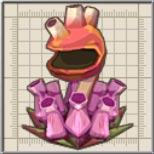
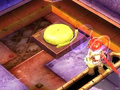

動きに翻弄され、奇襲を受けないように注意してください。

カサカサと近寄られ、ダメージを受けないように注意してください。
吸い寄せられてダメージを受けないように注意してください。今回は、毒沼の上に出現するので、万が一に備え、「健康祈願のお守り」を装備するといいかもしれません。

(健康祈願のお守り)
出現した敵を全て倒すと、A' 地点の扉が開きます。
出現した敵を全て倒すと、C' 地点の扉が開きます。
目次 > ゲームについて > 日本Falcom 攻略 > ZWEI II > ダンジョン一覧 > 未来研究楼 (LV.13)
らんの眼
ZWEI II (ツヴァイ 2、ZWEI II Plus)
| 概要 | 情報 | 攻略チャート |
| フード交換 | ペットについて | ボス戦 |
| 敵キャラ一覧 | ハンターランク | G-コロッセオ |
| アイテム一覧 | ガジェット一覧 | トレジャー一覧 |
| ダンジョン一覧 | クリアデータ特典 | Plusの追加要素 |
| ZWEI II攻略へ | 目次へ戻る |
| 第1 階層 |
|
αの印が付いた敵は「いふりーと」です。 動きに翻弄され、奇襲を受けないように注意してください。 |
|
βの印が付いている敵は「ころにー」です。 カサカサと近寄られ、ダメージを受けないように注意してください。 |
|  | γの印のついた敵は「おおぐちぼや」です。 吸い寄せられてダメージを受けないように注意してください。今回は、毒沼の上に出現するので、万が一に備え、「健康祈願のお守り」を装備するといいかもしれません。 (健康祈願のお守り) |
|
A 地点へ移動すると、敵が出現します。 出現した敵を全て倒すと、A' 地点の扉が開きます。 |
| B 地点にある的に攻撃を当てると、リフトが動き出します。B 地点にはジャンプで移動できます。 | |
| C 地点へ移動すると、敵が出現します。 出現した敵を全て倒すと、C' 地点の扉が開きます。 |
| 第2 階層 |

| A 地点に一定時間いると、A' 地点の扉が閉まり、風が吹き始め、「おおひのとり」が出現します。 「おおひのとり」を倒すと、倒した位置にワープゾーンが出現し、A' 地点の扉が開きます。 「おおひのとり」と戦いたくない場合は、大急ぎでA' 地点の扉を目指しましょう。 また、「おおひのとり」を倒すと出現するワープゾーンに入ると、B 地点へ移動します。 (ワープゾーン) |
|
| B 地点からB' 地点へは、土管のような穴をくぐって移動します。 | |
 |
C 地点にあるレバーを動かすことで、風を吹かせたり、止めたりすることができます。 「おおひのとり」戦でうまく利用してください。 |
| 第3 階層 |
|  | A 地点のゴングを鳴らすと、敵が次々と現れ、全てを倒すとA' 地点の扉が開きます。 |
| B 地点の土管のようなものをくぐると、B' 地点へ移動できます。 | |
| C 地点のリフトの上には、変な置物が置いてあり、これを壊さないとリフトに乗れません。この置物は「アンカーギア」で数回攻撃すれば、簡単に壊れますが、誤って下に落ちないように注意してください。 | |
 |
D のリフトは「疾風の魔法」を当てることで動かすことができます。 |
| E 地点には電球に入った「ばんのうめいど」がいます。 ZWEI II ではアルウェンの魔法を使って電球を点灯させても、特になにも起こらないようです。 ZWEI II Plus では、アルウェンの魔法を当てて電球を点灯させてから、ラグナで電球を攻撃すると「ばんのうめいど」が電球から飛び出し攻撃してきます。 よく見ると、ネコ耳を身につけ黄色いマイクを持っていますが、これが意味するのか分かりません。 |
| 概要 | 情報 | 攻略チャート |
| フード交換 | ペットについて | ボス戦 |
| 敵キャラ一覧 | ハンターランク | G-コロッセオ |
| アイテム一覧 | ガジェット一覧 | トレジャー一覧 |
| ダンジョン一覧 | クリアデータ特典 | Plusの追加要素 |
| ページの上部へ | ZWEI II 攻略へ | 目次へ戻る |